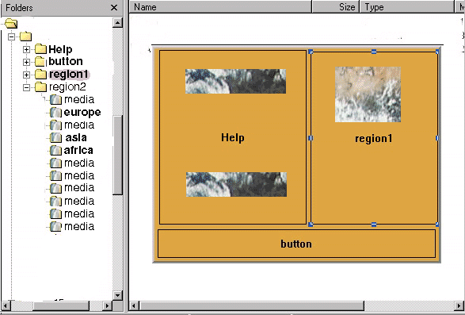

Jack and me agree to use a tree control for regions/viewport/medias
It should resolve a lot of problems (hierarchical region management, copy/paste, ...) and would be much clearer that the set of controls in the current implementation.
Jack and me seems agree that the medias/regions showed/hided in the layout view should be as automatic as possible.
The first following suggestion that Jack and me thought raise some important problems
To know the main problems you may have:
First look at the document layoutpb1doc (in work format). In addition you may the following problems:
- When you play the document and pause it for editing, you have to show the 'playing' nodes, and not the selected nodes anymore: confusing for the user. And what happen if you pause, and select nodes which are not playing
- We can't re-use the same kind behavior for the regions, because, in this case you may want to have an overview of your entire document
- If you edit a node and change the view, it may be extremely confusing (thinking that you have a single selection)
What I suggest is:
- keep only one global focus which is propagated whichever the view
- show/hide the media nodes in the previous area with the following
rules:
a) If you select one or several medias from any view (except the layout
view), show only the medias which are the focus in preview area (of layout
view).
b) If you change the selection from the layout view, don't affect the
medias showed in the previous area. If you want hide/show some medias in
the layout view (during you working in the layout view), you can do if
you use the 'alt' key (on Windows).
c) you optional manage a 'alt' key (on windows) from any view: the
semantic would be: show/hide the media
- add an extra indicator in the region tree to show the media / (region) showed. This indicator may be as well updated when you play and pause the document.
For the region, we may have two options: show all regions all the time (may according to thw switch ?), or only the regions which contain the medias showed. In addition, you may affine the showed/hided region with the 'alt' key
In addition, we may have an option (which would be the default during playing mode), to show the medias/regions according to all medias showed in the same time that the selected node.
This suggestion should be easily applicable for the most current work-flow:
1)
a) First, to create all regions in the layout view
b) To add the media nodes from the structure view, and choice a region
for each of them
c) refine media positioning
2)
a) First create all media nodes from the structure view
b) create the regions in the layout view
c) choice a region for each media (using drag and drop)
d) refine the media positioning
3)
a) First create all regions in the layout view
b) create the basic timing structure
c) drag and drop directly some medias files (for example index), into
the layout view, and drop media nodes (from structure view) the others
medias
d) refine the timimg
we all agree
- show real background color
- show only line for regions
- show background as:
image or bgcolor according to z-order, or ... ?: to define.
Jack and me agree the two first points
Jack is not conviced by the third point. I'd like to experiment it
- you can manage this case only if you have:
one media in a region. (It shouldn't be the case for the nodes which
are played in sequence). So, not applicable on document of type 'slideshow'.
Or, when if we are sure that we can have only one node showed in the same
time (seq without special timimg attribute), we may apply this rule ?
In general, we should all the time keep in mind the two separate concepts:
region: abstract area where the media are played
media: item that you play
it shouldn't be difficult even for a basic user to understand this, and should be much simpler for him to keep all the time it's two concept separated if we can't manage them together all the time (at least for the basic functionalities)
So, this region abstraction level may raise new problems. Maybe, you may make it optional, but without affect the tree region
b) dynamic positioning rules: it may be interresting in many cases to express a size relative to its parent, center a media which ever the parent geometry. The raison may be:
- you don't know the target size
example:
<smil ...>
<layout>
<viewport>
<switch>
<region regionName="region1"
width="600" height="500" systemScreenSize="1280X1024" />
<region regionName="region1"
width="300" height="200" />
</switch>
</viewport
</layout>
<body>
<video src="video1.jpg" regPoint="center" regAlign="center"
region="region1" />
</body>
</smil>
- you want make a document and export it with different viewport size, or re-use a part
- have more animation possibilities
...
Note: the align tools for regions should be the same as for medias
- to show in the layout view the real positioning, background, z-index,
regpoint attributes, ...
- to edit the media/sub-region as the same item
The common functionalities that the user should need for the positioning are:
- position a media by direct mouse manipulation inside a region
- position a media using alignment tools inside a region
- position a media using registration point inside a region
- change the media size, and the fit behavior, fast back to intrinsic
size, ...
- cropping
To provide this set of functionalities, we have to do some translations between, what the user edit, and the internal representation (using sub-regions and SMIL CSS rules). the result of this functionalities can be translated to SMIL 2 language except mainly:
- cropping: I suggest to give up for now this option
- if you resize a media (with fit different of hidden), then you want
to align (using regpoints) the result inside the region. It's possible
to simulate this case, but the alignment constraint will be static (not
dynamic). So, it shouln't be a problem for the most of documents, and the
user may use in this case
We have to as well be able to show more complex SMIL2 documents. For
this case, I suggest for now to break some original constraints if you
edit the document (for example, if you mix sub-region and regPoint attributes)
- implementation without break the player ???.
- how do you manage multi-toplevel ???. one window by top-level seems
me to many windows opened. Or maybe can we manage all topLevel windows
(for player) in the same windows ?
- low level extension (or API) : drag and drop support, be able to grow
(eventualy), ...
- implement the tree control. We should interface window/mac native
API to Python API. But maybe we may re-use an existing implementation ?
- palette support